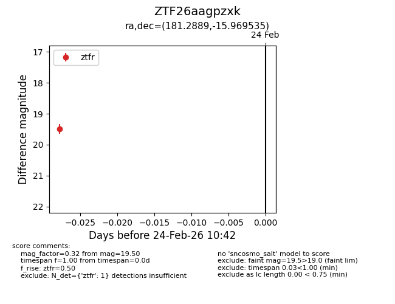
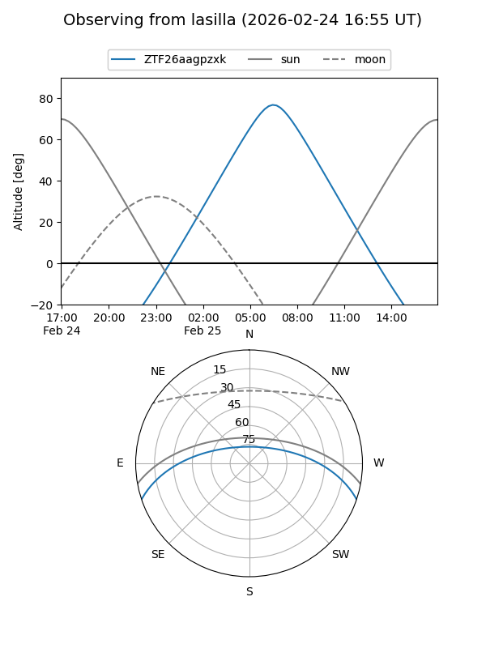
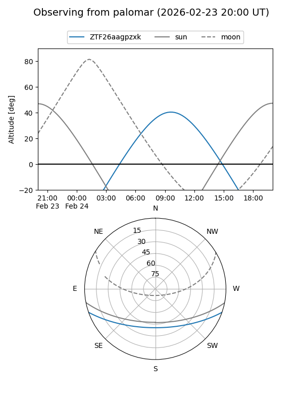
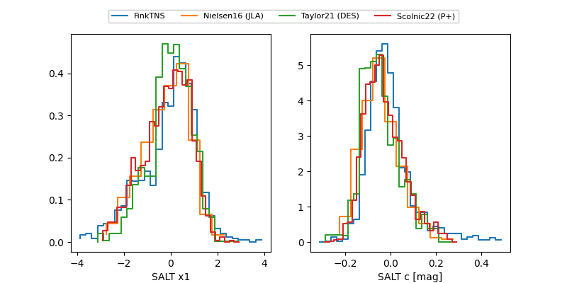

ZTF26aagpzxk
Target ZTF26aagpzxk at 2026-02-24 10:43
Aliases and brokers:
FINK: link
Lasair: link
ALeRCE: link
alt names
ZTF26aagpzxk (ztf,fink_ztf)
Coordinates:
equatorial (ra, dec) = 181.2889,-15.96953
equatorial (HMS+DMS) = 12:05:09.34,-15:58:10.32
galactic (l, b) = (286.9735,+45.46325)
Flags:
Photometry:
last ztfr=19.50
1 ztfr detections
Lightcurve

Visibility


Additional plots
